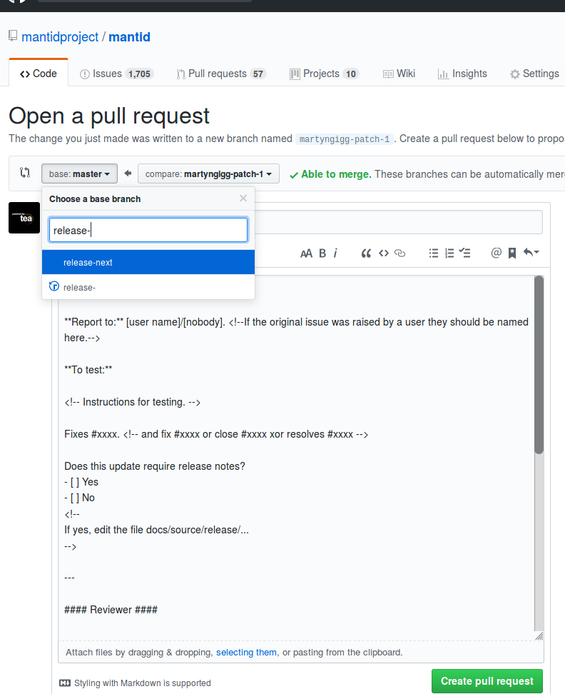

Mantid Git Workflow#
Summary#
Go to the Mantid Git Config page to ensure that Git is set up correctly before starting.
This page describes the workflow used in conjunction with Git and GitHub for those who have push access to the repository.
Go here or here for a cheatsheet of Git commands.
Go here for a (fairly) comprehensive guide to solving your various Git problems.
Description#
We follow the GitHub flow, using branches for new work and pull requests for verifying the work.
The steps for a new piece of work can be summarised as follows:
Create a branch from
mainusing the naming convention described at Naming BranchesDo the work and commit changes to the branch. On commit, the pre-commit framework will run, it will check all your changes for formatting, linting, and perform static analysis. Push the branch regularly to GitHub to make sure no work is accidentally lost.
When you are finished with the work, ensure that all of the unit tests, documentation tests and system tests if necessary pass on your own machine
Open a pull request (Pull Requests) from the GitHub branches page
This will check with the buildservers for cross-platform compatibility
If any issues come up, continue working on your branch and push to GitHub - the pull request will update automatically
Naming Branches#
When naming public branches that will be
pushed to GitHub, please follow the convention of
issuenumber_short_description. This will allow others to discover
what the branch is for (issue number) and quickly know what is being
done there (short description).
Git Blame#
The refspecs listed in this file are ignored by git blame when git is configured correctly.
This is mostly used to hide commits that are created by bots (e.g. formatting)
The refspecs must be listed in commit order from oldest to newest.
Github does this automatically in the blame view of a file
To configure it locally (examples assume you are in the root of your local clone), add it as an option to git blame
git blame --ignore-revs-file .git-blame-ignore-revs
or configure your local git instance
git config blame.ignoreRevsFile .git-blame-ignore-revs
Pull Requests#
For an general overview of using pull requests on GitHub look here.
When creating a pull request you should:
Ensure that the title succinctly describes the changes so it is easy to read on the overview page
The title should not contain the issue number
Reference the issue which the pull request is closing, using one of these keywords
State the user and facility (if relevant) who initiated the original issue, if they are named in the issue. Please do not put full email addresses on the Pull Request, as it is publicly accessible. If the user would not be easily identified by someone picking up the ticket, be prepared to act as a point of contact with the reporter.
Ensure the description follows the format described by the PR template on GitHub
A good example is here.
Recommended reading: How to Write the Perfect Pull Request
For further information about the review process see reviewing a pull request.
Checkout a Pull Request#
To check out a particular pull request for functional testing use the test-pr alias that was set up in the Mantid Git Config instructions.
git test-pr <remote-name> <ID>
where <ID> is the pull request number given on GitHub and <remote-name> is the name
of the remote pointing to the original mantid repository. If you cloned directly from mantid
then remote-name=origin else if you cloned from a fork then it is the name of remote that points
back to the original repository.
Note that these commands will checkout a temporary branch that has the development branch merged with main and not just
the development branch on its own.
The Mantid Git Config page also provides the follow alias to delete all pr/ prefixed branches, which is useful if you have several:
git test-pr-remove-all
Stale Pull Requests#
Pull requests that go an extended period of time without any activity are considered stale and will be picked up by a (partially) automated bot which will notify those that are required to take action in order to keep the review process going.
This is also used to notify developers of pull requests that develop conflicts with the base branch and that fail continuous integration tests, in those two cases the age of the pull request is ignored.
The reasons a pull request may be flagged up currently are:
Conflicts with base branch
Failing CI
Last developer has left the Mantid team
Nobody has reviewed the PR
An assigned reviewer has yet to complete a review
A gatekeeper has not second reviewed an approved PR
A review from a specific user was requested but that user has yet to complete a review
The developer has yet to act on comments left in a review
(code for the bot is currently here)
Code Freeze#
At the start of a code freeze before a major release there will be a
release branch created named release-next. At this point
only bugfixes should be applied to this release branch so that it can
be stabilized for the release. The release branch will be merged to
main periodically so bugfixes do not need to be separately
merged to main.
New Branches#
During the code freeze it is important to ensure that a new branch is created from the correct base branch depending on the scope of the changes:
main: maintenance fixes, new features. Command:git fetch -p && git checkout --no-track -b MYBRANCH_NAME origin/mainrelease-next: bugfixes. Command:git fetch -p && git checkout --no-track -b MYBRANCH_NAME origin/release-next
Pull Requests#
To merge code with the release branch, open a pull request as usual but instead of using the
default merge target select release-next:

Fixing a PR with an Incorrect Base Branch#
The target branch on GitHub needs to match the base branch used in the commands above when the branch was initially created. If the compare view shows changes other than your own it is most likely that the base branch is incorrect and it needs to be fixed.
As an example consider the scenario where a branch named topic has
been based off the main branch as follows:
o---o---o---o---o main
| \
| o---o---o topic
\
o---o---o---o---o release-next
where we actually want the topic branch based off release-next
instead i.e.
o---o---o---o---o main
\
o---o---o---o---o release-next
\
o'---o'---o' topic
To fix this situation we use the rebase command, providing the
--onto option as follows:
git fetch
git rebase --onto origin/release-next $(git merge-base origin/main origin/topic) topic
Fixing a merge conflict between protected branches#
A Gatekeeper should follow these instructions if there is a merge conflict between two protected branches e.g. main and release-next.